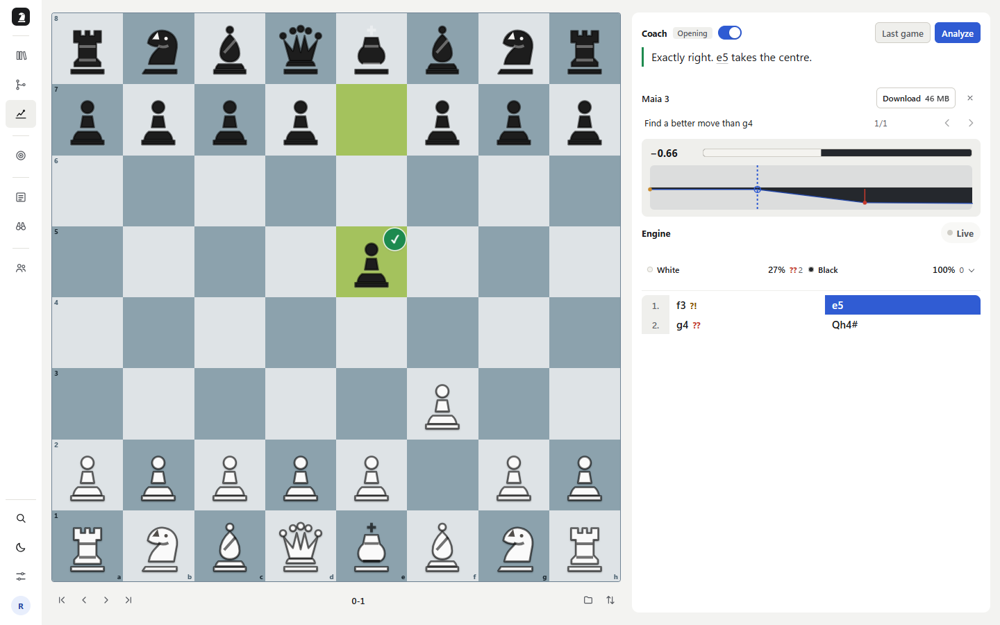
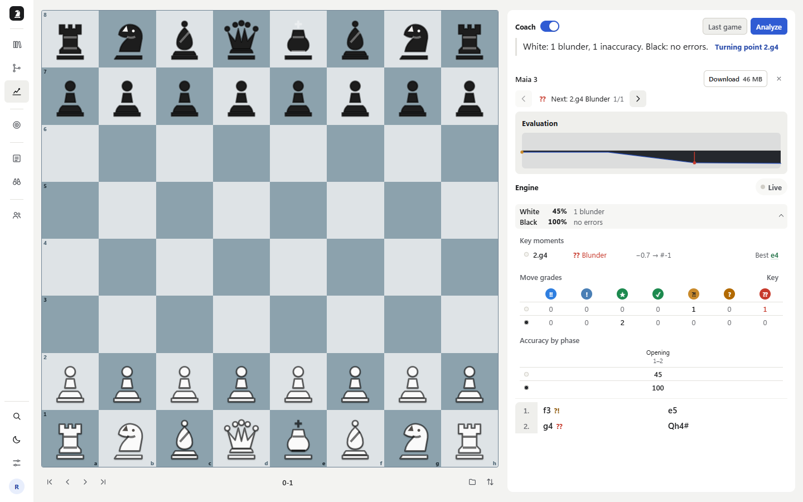
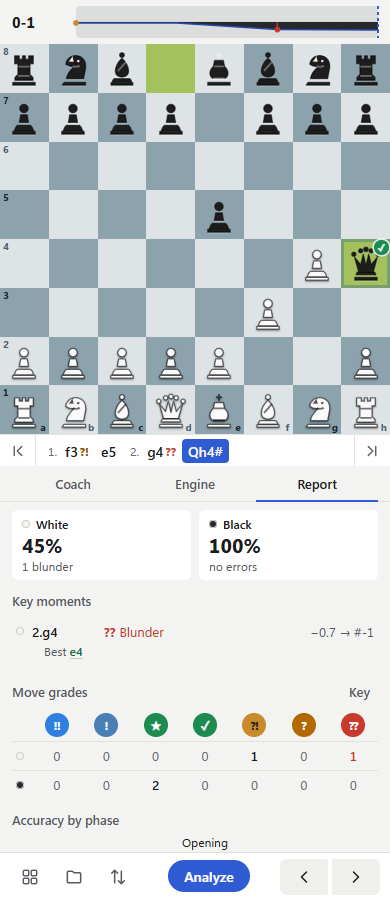

2026-10-27 · 9 scoped Luna runs · isolated headless Playwright · local API and disposable SQLite
Prior geometry reproduction
Fixed desktop navigation

The old expanded report led with verbose key-moment rows and all grade counts. It now leads with phase statistics and errors; the complete grade table is available on demand. Each side's collapsed row shows identity, accuracy and one aggregate error count.




Accuracy follows Lichess accuracy, its aggregation source and math implementation. The shared chronological axis and opposite-side lanes adapt Lichess analysis and move-time chart conventions (chart source). Progressive access to analysis follows the interactive review pattern in ChessTempo's analysis manual, sections 14.2–14.3. This is an adaptation to PrepForge's report, not a claim that competitors use the same error plot.
Three Codex Luna agents took three waves, one page and viewport per run, with no product source or documentation context. Agents recorded visible UI behavior; root reviewed their findings against implementation and validation. These are 9 scoped runs, not 9 independent people. Test-account data was shared, so later runs were not pristine onboarding journeys.
Saved analysis opened; great-move search could not be confirmed without Maia weights.
I opened the app at the supplied local URL, signed in, and went to **Analyze**. The page showed a chessboard and a **Recent analyses** list. I opened the saved game marked **0-1**. The report showed the result, a short summary of each side’s errors, the turning point (**2.g4**), an evaluation graph, side summaries, and the move list. I selected **Find great moves**. The report changed to “Reading the game…” and showed the engine as starting/queued, then returned to the same report after about eight seconds. I could not see a new result or a completion message explaining what it found.Representative screenshot
# Desktop UX review — Analyze Game Report Date: 2026-10-27 Viewport: 1440 × 900 Account: disposable reviewer account Scope: Analyze Game Report only ## First-person journey I opened the app at the supplied local URL, signed in, and went to **Analyze**. The page showed a chessboard and a **Recent analyses** list. I opened the saved game marked **0-1**. The report showed the result, a short summary of each side’s errors, the turning point (**2.g4**), an evaluation graph, side summaries, and the move list. I selected **Find great moves**. The report changed to “Reading the game…” and showed the engine as starting/queued, then returned to the same report after about eight seconds. I could not see a new result or a completion message explaining what it found. ## Reproduced finding ### P2 — “Find great moves” gives no visible result after the reanalysis **Steps:** Open Analyze → choose the saved game with result 0-1 → select **Find great moves** → wait for the engine to finish. **Expected:** The action should show the great moves it found, or clearly say that none were found. **Actual:** The app briefly shows “Reading the game…” and “Starting… / Queued”, then returns to the same report with the same visible move list and no result or completion status for the action. I could not tell whether it succeeded. **Evidence:** [02-saved-analysis.png](02-saved-analysis.png) shows the starting report; [03-great-moves.png](03-great-moves.png) shows the report after the action returned. ## Visual critiques 1. **Board dominates the report.** The board takes nearly two thirds of the desktop width, while the report itself is in a narrow right column. That makes the graph and move list feel secondary even though they are the report’s useful evidence. See [02-saved-analysis.png](02-saved-analysis.png). 2. **The report panel has substantial unused space.** The summary and report controls occupy only the upper part of a tall white column, leaving a large blank region below. A wider report layout could give the move list and evaluation more room without making the page feel empty. 3. **The evaluation graph is hard to read at a glance.** It is a short, low-height strip with small labels and a single dramatic change. The turning point is stated in text above, but the graph itself has little room to communicate move context. See [02-saved-analysis.png](02-saved-analysis.png). ## What I could not test - The other saved analyses, because this review stayed on the completed 0-1 game report. - Engine depth or move quality beyond the app’s visible summary. - Keyboard-only and screen-reader operation. - Narrower viewport behavior; this review was limited to 1440 × 900 desktop.
First view only. Add, fetching and review were not exercised; empty-state clarity remains a hypothesis.
I opened the app at the 390 × 844 mobile viewport and saw the Library dashboard with a sign-in prompt. I opened Sign in, entered the supplied reviewer credentials, and submitted once. The account opened successfully and showed the seeded Caro-Kann review card on Library.Representative screenshot
# Games mobile UX review - Date: 2026-10-27 - Viewport: 390 × 844, mobile emulation with touch enabled - Scope: Games page only - Account: disposable reviewer account provided for this review; authenticated once - Result: no confirmed functional defect; exploration was limited when the authenticated browser context ended ## First person journey I opened the app at the 390 × 844 mobile viewport and saw the Library dashboard with a sign-in prompt. I opened Sign in, entered the supplied reviewer credentials, and submitted once. The account opened successfully and showed the seeded Caro-Kann review card on Library. I tapped Games in the bottom navigation. The page changed to `#/games`. At the top I saw the Games heading. A compact source card showed “Games from,” an “Add” affordance, “Sample,” and a `last 10` selector. Below it, a “Games to review” panel said “No games checked yet.” A fixed blue “Link Lichess account” button sat above the persistent bottom navigation. At 390 × 844, the whole Games view fit in one screen with substantial unused vertical space. I captured the authenticated Games page at [04-games.png](04-games.png). The screenshot shows the page without the browser chrome. I did not tap Add, change the sample count, or activate the Lichess link: after the screenshot, a fresh isolated browser context did not retain authentication, and I did not sign in a second time. The later signed-out state was caused by my exploration context ending and is not reported as an app defect. ## Findings ### No confirmed reproducible defects I did not reproduce a broken control or a failed Games workflow. The authenticated first view exposed Add and the source/count controls, but I did not exercise them. ### Usability concern: “No games checked yet” has no next action in the review panel - Severity: P2, usability - Reproduction: sign in; tap Games in the bottom navigation; inspect “Games to review.” - Expected: an empty review state makes the next step apparent, such as selecting or adding a source of games. - Actual: the panel only says “No games checked yet.” The source and Add controls are elsewhere in the card, and the blue account-link button is a separate fixed action. The relationship between these actions and “checked” games is unclear from the first screen. - Evidence: [04-games.png](04-games.png) - Confidence: moderate; this is a clarity issue in the visible state, not evidence that the workflow is broken. ## Visual observations 1. The neutral warm-gray page, white source card, and saturated blue Lichess action form a restrained palette; the blue action is easy to find. 2. The heading, source card, and review panel have clear grouping, but the two compact rows inside the source card leave “Games from” and “Sample” visually disconnected from the review panel below. 3. The screen is unusually sparse at this viewport: after the 90-pixel-tall review panel, a large blank area separates content from the bottom-pinned account action. This makes the page feel unfinished when no games are present. ## Couldn’t test - Tapping Add and observing its options or result. - Changing `last 10` to another count. - Following the Lichess account link flow. - Loading or reviewing a game, since the visible review panel had no games checked. - Returning to the signed-in context after the isolated browser closed; I intentionally did not sign in again. ## Screenshots - [01-initial.png](01-initial.png): initial Library view before sign-in. - [02-signin.png](02-signin.png): sign-in form. - [03-after-login.png](03-after-login.png): Library after the one successful sign-in. - [04-games.png](04-games.png): authenticated Games page, primary evidence.
Created a Black repertoire and filtered it. Default naming and a completed onboarding step are not confirmed defects.
I opened `http://127.0.0.1:8765` at 1440×900 in an isolated Edge context. The signed-out Library immediately showed a clear Sign in action and prompted me to create or import a repertoire. I signed in as `reviewer-20261027@example.com`; the account already contained a Caro-Kann review repertoire and dashboard activity (3 analyses, 1 repertoire), so this did not feel like a clean first-time account.Representative screenshot
# Library desktop review — 2026-10-27 ## First-person journey I opened `http://127.0.0.1:8765` at 1440×900 in an isolated Edge context. The signed-out Library immediately showed a clear Sign in action and prompted me to create or import a repertoire. I signed in as `reviewer-20261027@example.com`; the account already contained a Caro-Kann review repertoire and dashboard activity (3 analyses, 1 repertoire), so this did not feel like a clean first-time account. I selected **New repertoire**, entered `Review27 Sicilian`, chose Black, and created it. Creation succeeded and opened the repertoire editor with a success toast. Back in Library, the repertoire appeared in the list with Black and 0% mastery. Typing `Review27` in the filter left only that repertoire visible, showing that filtering is immediate. I started to inspect the card menu for rename and the Import PGN flow, but did not complete either. The UI automation initially clicked a background Black filter behind the open modal; inspection showed Your color is a native select. This was a driver targeting mistake, not a product defect. ## Reproduced findings ### P2 — “New repertoire” starts with prefilled generic name **Steps:** Sign in; open Library; select New repertoire. **Expected:** A blank name field with an example/placeholder, or a clearly selected default that is easy to replace. **Actual:** The name field contains `New repertoire`. The name is editable and creation works, but the generic value can be mistaken for an intentional name if a user submits without noticing it. ### P3 — First-time prompt conflicts with the account’s actual state **Steps:** Sign in with the supplied reviewer account and read Library’s Next steps panel. **Expected:** Guidance that reflects the state of the account, or no first-time checklist when the account already has repertoire and analysis data. **Actual:** The dashboard reports `3 analyses · 1 repertoire`, while the Next steps panel says `Build your first repertoire` and marks it Done. This looks stale/inconsistent and lowers confidence in the checklist. ## Three visual critiques 1. The Library’s hierarchy is easy to scan: navigation, account summary, repertoire controls, then rows. Mastery and queue information are aligned as useful comparison columns. 2. The Create modal is compact and focused. The native White/Black selector looks like an ordinary form field, which is consistent but less visually prominent than the choice’s importance might warrant. 3. The empty repertoire editor has a large central chessboard and a small “Play a move to add it to this line” instruction. The board gives the screen a strong focal point; the instruction is understated and might be missed by someone unfamiliar with the workflow. ## Not tested - Rename and other repertoire card actions. - PGN import, including invalid-file behavior. - Search results with many repertoires and empty-result feedback. - Keyboard-only use and responsive layouts. - Persistence after reload or a second sign-in. ## Screenshots - [Signed-in Library](signed-in.png) - [New repertoire modal](new-modal.png) - [Created repertoire editor](created.png) - [Rename menu attempt](rename-menu.png) (not captured; menu inspection did not complete)
Used Hint, played a wrong move, corrected it, completed the queue and opened Rehearse. New demonstration scoring is excluded from a first-try bug claim.
I opened the app and signed in with the supplied reviewer account. I selected Train from the bottom navigation. The Drill tab showed a due queue with one card, a repertoire filter, a Blitz toggle, and a visible “New move” row for Caro-Kann review (`1.e4`). A separate Rehearse card showed the same repertoire and one move.Representative screenshot
# Train mobile UX review - Date: 2026-10-27 - Viewport: 390 × 844, mobile emulation with touch enabled - Scope: Train page only - Account: disposable reviewer account provided for this review - Outcome: Drill and Rehearse flows exercised; no confirmed functional defect ## First person journey I opened the app and signed in with the supplied reviewer account. I selected Train from the bottom navigation. The Drill tab showed a due queue with one card, a repertoire filter, a Blitz toggle, and a visible “New move” row for Caro-Kann review (`1.e4`). A separate Rehearse card showed the same repertoire and one move. I tapped the first Start button. The page opened a board view, showed the incoming `1.e4` cue, then changed to “Your move.” I opened Hint; it displayed “Hint 1 · Idea” and the clue “A pawn move to shape the structure to your plan.” I played `Nf6` by tapping the knight on g8 and then f6. The app kept the board active and displayed “Not Nf6” and “Try again.” I then played the repertoire move `c6` by tapping the c7 pawn and c6. The app continued with the opponent reply `Nf3` and finished the queue with “Queue complete,” reporting one card and 100% first try. Screenshots: [03-session-ready.png](03-session-ready.png), [04-hint.png](04-hint.png), [05-wrong-retry.png), and [06-correct-move.png](06-correct-move.png). I opened the Practice tab. It showed Play options for Maia and Lichess, a Repertoire selector, play-as choices, and a Random option; the Maia control showed a 46 MB download. I did not download an engine or launch a game. I returned to Drill and tapped the second Start button under Rehearse. Rehearse opened a board for Caro-Kann review, showed `1 / 1` and “Your move,” with Menu, Flip, Hint, and Skip controls at the bottom. Screenshot: [08-practice.png](08-practice.png) and [09-rehearse-session.png](09-rehearse-session.png). ## Findings ### No confirmed reproducible defects The exercised drill flow accepted the expected move, rejected a legal but off-repertoire move with a clear correction, allowed another attempt, and completed the queue. The “Try again” message is a prompt to make another move; there is no separate Retry button. Rehearse opened successfully. ### Hint is unavailable while the incoming move cue is playing - Severity: P3, minor usability - Reproduction: Train → Drill → Start; while the board shows “Finding the position / Watch e4,” inspect Hint. - Expected: the disabled state is understandable or Hint becomes available when the cue finishes. - Actual: Hint is disabled during the incoming move cue and becomes usable once the page changes to “Your move.” This is coherent as a workflow, though the reason for the temporary disabled state is not stated on screen. - Evidence: [03-session.png](03-session.png) shows the cue state; [03-session-ready.png](03-session-ready.png) shows the active state. - Confidence: moderate; observed on the seeded one card. ## Visual observations 1. The warm gray page, white panels, restrained blue selection and bold blue Start button create a coherent visual hierarchy. The primary Drill action stands out without overwhelming the board. 2. The chessboard uses nearly the full 390-pixel width and the piece targets are large enough for touch. In session, the board occupies the top half and bottom actions remain anchored at the screen edge. 3. The Rehearse screen leaves a large blank band between the move prompt and the bottom action bar. The board is clear, but the empty lower area makes the session feel less dense than the Drill home screen. ## Couldn’t test - Starting a Maia game or downloading the 46 MB engine. - Linking or launching Lichess from Practice. - A multi move repertoire or a longer queue. - Whether the Hint control’s disabled cue state needs a tooltip; I observed it enabled after the cue and used it successfully. ## Screenshots - [02-train-home.png](02-train-home.png): Drill setup and Rehearse card. - [03-session.png](03-session.png): incoming move cue. - [03-session-ready.png](03-session-ready.png): active drill state. - [04-hint.png](04-hint.png): hint revealed. - [05-wrong-retry.png](05-wrong-retry.png): incorrect move and “Try again.” - [06-correct-move.png](06-correct-move.png): correct move accepted and opponent reply. - [08-practice.png](08-practice.png): Practice options. - [09-rehearse-session.png](09-rehearse-session.png): Rehearse board and controls.
Unknown username rejected; accepted public source failed upstream export. Successful fetch and plan generation remain untested.
I opened the app at 1440×900 in a fresh isolated Edge context and signed in as `reviewer-20261027@example.com`. Scout opened on an empty setup: **Opponent**, **Add**, **Color**, **Start**, and a central prompt to add a Lichess username. I opened **Add** and found an inline source drawer with a username field, a **Self** checkbox, an account count, and **Done**.Representative screenshot
# Scout desktop review — 2026-10-27 ## First-person journey I opened the app at 1440×900 in a fresh isolated Edge context and signed in as `reviewer-20261027@example.com`. Scout opened on an empty setup: **Opponent**, **Add**, **Color**, **Start**, and a central prompt to add a Lichess username. I opened **Add** and found an inline source drawer with a username field, a **Self** checkbox, an account count, and **Done**. I searched for `codex_review_missing_user_20261027` and pressed Enter. The UI returned “No Lichess player named codex_review_missing_user_20261027” and kept the account count at zero. I then searched for the public username `DrNykterstein`; it was accepted as an external source and the count changed to 1. I changed Color from Both to Black in the top control, closed the source drawer with Done, and pressed Start. Start completed with 0 games fetched and an inline error: “Couldn't scout this player — DrNykterstein: Lichess won't export DrNykterstein's games, so Scout can't read them.” A **Retry failed sources** action appeared. I saved the isolated browser storage state for recovery. I did not activate **Download 46 MB** because it initiates a substantial model download; I inspected its placement and label only. ## Reproduced behavior ### Search rejects an unknown username inline **Steps:** Scout → Add → enter `codex_review_missing_user_20261027` → Enter. **Expected:** A clear no-match result without adding an account. **Actual:** “No Lichess player named codex_review_missing_user_20261027”; the count remains 0. This is useful and specific feedback. ### Valid username can still fail game retrieval **Steps:** Scout → Add → enter `DrNykterstein` → Enter → select Black → Done → Start. **Expected:** Scout retrieves available opponent games or identifies the blocking condition. **Actual:** Source is accepted, but Start fetches 0 games and reports that Lichess will not export this player's games. The retry action is visible. I could not determine whether this is a temporary upstream restriction or an expected limitation for this account, so I record it as an observed result rather than a confirmed app defect. ## Visual review 1. The top row puts source, color, Start, and Reset in a compact sequence. At 1440px it is easy to scan, though labels and inputs sit close together. 2. The empty state is centered in a shallow white panel beneath the Maia row. It is calm and direct, but most of the screen remains unused, so Scout initially feels like a setup bar floating over a blank canvas. 3. The failure state uses a red left edge and red headline with the reason beneath and retry aligned right. It is easy to find and the action is discoverable. The empty area below keeps the page visually sparse after the error. ## Controls exercised - Add source drawer and username search, including unknown and accepted usernames. - Color selector changed from Both to Black. - Start and observed the failed-source state and Retry failed sources affordance. ## Not tested - Retry failed sources. - Maia model download/install or any related access/plan prompt. - Self-source selection, multiple sources, successful game retrieval, and Reset. - Keyboard-only navigation, narrow viewport, and persistence after reload. ## Artifacts - [Initial empty Scout](initial.png) - [Add source drawer](add-source.png) - [Unknown username result](search-result.png) - [Accepted source](valid-source.png) - [Black selection](black-selected.png) - [Start result](start-result.png) ## Driver notes One locator using the name “Scout” matched both the navigation tab and Add source control; a later locator expected Black to be a button although it is a native select. Both were selector errors, recovered by targeting the nav test ID and selecting the native dropdown. Neither is reported as product behavior.
Theme, board and piece selections responded and persisted after reload.
I signed in to the local app and opened **More → Settings** from the bottom navigation. Settings opened on Account. I could read the account, chess account, and data sections, with the main navigation remaining fixed along the bottom.Representative screenshot
# Mobile UX review — Settings Date: 2026-10-27 Viewport: 390 × 844, touch enabled Scope: Settings on mobile ## First-person journey I signed in to the local app and opened **More → Settings** from the bottom navigation. Settings opened on Account. I could read the account, chess account, and data sections, with the main navigation remaining fixed along the bottom. I opened **Appearance** and used touch taps to change **Color theme** from System to Dark, **Board colors** from Slate to Green, and **Piece set** from Staunton Pro to Classic. The selected states updated immediately and the screen adopted the dark theme. I reloaded the page, opened Appearance again, and confirmed all three selections were still active. ## Findings No functional failure reproduced in the three controls exercised. Theme, board palette, and piece set all responded to touch and persisted after reload. ## Visual critiques 1. **Settings content leaves most of the phone screen unused.** On the Appearance screen, the controls occupy roughly the top half while a large blank area fills the rest above the fixed bottom navigation. The page feels sparse for a dedicated settings view. See [04-appearance.png](04-appearance.png) and [05-controls-changed.png](05-controls-changed.png). 2. **The section navigation is compressed into one narrow row.** Account, Appearance, Board, and Engine fit at 390 px, but the labels and tap areas are close together. It remains usable in this run; the tight spacing makes switching sections feel less forgiving than the larger controls below. See [03-settings.png](03-settings.png). 3. **Selection feedback is clear and consistent.** The active theme, board palette, and piece set use a visible selected treatment, and the dark theme keeps the controls readable. See [05-controls-changed.png](05-controls-changed.png). ## What I could not test - Whether the choices affect a live board or analysis screen after leaving Settings. - Settings behavior at narrower phone widths or with larger system text. - Keyboard-only and screen-reader navigation. - Audio behavior; no audio controls or playback were evaluated. ## Screenshots - [01-home.png](01-home.png) — signed-in mobile Library - [02-more-menu.png](02-more-menu.png) — More menu - [03-settings.png](03-settings.png) — Account settings - [04-appearance.png](04-appearance.png) — original Appearance settings - [05-controls-changed.png](05-controls-changed.png) — changed selections - [06-after-reload.png](06-after-reload.png) — post-reload Settings landing view - [07-persisted.png](07-persisted.png) — selections confirmed after reload
Added e4 and an e5 reply; reload confirmed persistence. Shared test content existed; note save/cancel was not exercised.
I signed in and opened the existing `Review27 Sicilian` repertoire from Library. It opened the editor with a full width chessboard, Moves / Explorer / Coverage tabs, and fixed navigation controls along the bottom. The repertoire had no moves, so I tapped the white e2 pawn and e4 to create the first move. The header showed “Saving…” and then “Saved.” I reloaded the editor and confirmed `1. e4` remained in the move list.Representative screenshot
# Repertoire editor mobile UX review - Date: 2026-10-27 - Viewport: 390 × 844, mobile emulation with touch enabled - Scope: Repertoire editor only - Account: disposable reviewer account provided for this review - Repertoire: existing `Review27 Sicilian` - Outcome: branch creation and move persistence confirmed; note save/cancel behavior not exercised before the review was wrapped ## First person journey I signed in and opened the existing `Review27 Sicilian` repertoire from Library. It opened the editor with a full width chessboard, Moves / Explorer / Coverage tabs, and fixed navigation controls along the bottom. The repertoire had no moves, so I tapped the white e2 pawn and e4 to create the first move. The header showed “Saving…” and then “Saved.” I reloaded the editor and confirmed `1. e4` remained in the move list. I advanced the board to the e4 position, then tapped the black e7 pawn and e5. This created a second black reply alongside the existing c5 line. The move list showed both `c5` and `e5` under `1. e4`, and the editor returned to “Saved.” I reopened the repertoire in another recovered context and confirmed the e5 branch was present. I opened the move’s options. On mobile emulation, the options appeared in a bottom sheet with Generate from here, Disable branch, Add note…, Copy FEN, Copy line PGN, and Delete this move. Screenshot: [11-move-menu.png](11-move-menu.png). I did not enter the note editor, save a note, cancel a draft, or verify note persistence. The run was wrapped at the parent’s request before that flow was exercised. ## Findings ### No confirmed defect in branch creation or move persistence - Reproduction: Library → `Review27 Sicilian` → tap e2 then e4 → wait for “Saved” → reload → verify `1. e4`; advance one move → tap e7 then e5 → wait for “Saved.” - Expected: the move list reflects saved repertoire moves after reload. - Actual: `1. e4` remained after reload; adding e5 created a second reply next to c5, and e5 was still present in the recovered editor context. - Evidence: [04-e4.png](04-e4.png), [04b-reloaded.png](04b-reloaded.png), [10-branch-saved.png](10-branch-saved.png). - Severity: none observed. ### Note save and cancel remain unverified - The visible move options include “Add note…”. - I did not open the note editor or exercise save/cancel, so I have no confirmed result for that requested workflow. - Evidence: [11-move-menu.png](11-move-menu.png). ## Visual observations 1. The board uses nearly the entire 390-pixel width, with large square targets and legible pieces. It is easy to read and tap on a phone. 2. The editor has clear tab and move-list groupings, while the fixed bottom controls keep navigation in reach. The selected move also appears in the footer, adding a small repeated label. 3. The blank editor leaves a large empty area between the move list and bottom bar. The move options bottom sheet is compact and its “Add note…” action is easy to locate. ## Couldn’t test - Add note, saving a note, canceling a draft, and confirming note persistence after reload. - Disabling a branch or generating moves from a node. - Explorer and Coverage behavior. ## Screenshots - [01-library.png](01-library.png): signed in Library with Review27 Sicilian. - [04-e4.png](04-e4.png): first move with saved status. - [04b-reloaded.png](04b-reloaded.png): `1. e4` still present after reload. - [10-branch-saved.png](10-branch-saved.png): c5 and e5 replies under e4. - [11-move-menu.png](11-move-menu.png): move actions and Add note… affordance.
Created two teams, switched between them and shared one repertoire View only. No invitations or messages sent.
I opened Teams at 1440×900 in an isolated Edge context and signed into `reviewer-20261027@example.com`. The page began with **No teams yet**, a concise prompt, a **New team** button, and an Incoming shares empty state. I created `Review27 Team` by entering a name in a short dialog. The team opened immediately; I could see the owner role, one member (me), tabs for Members and Shared repertoires, and an Invite control. I did not use Invite or Add member.Representative screenshot
# Teams desktop review — 2026-10-27 ## First-person journey I opened Teams at 1440×900 in an isolated Edge context and signed into `reviewer-20261027@example.com`. The page began with **No teams yet**, a concise prompt, a **New team** button, and an Incoming shares empty state. I created `Review27 Team` by entering a name in a short dialog. The team opened immediately; I could see the owner role, one member (me), tabs for Members and Shared repertoires, and an Invite control. I did not use Invite or Add member. I opened Shared repertoires and chose **Share a repertoire**. The dialog offered my own `Review27 Sicilian` and `Caro-Kann review`, then View only, Can copy, and Can edit. I selected only `Review27 Sicilian`, left View only selected, and shared it. The team panel then showed the repertoire, me as the sharing user, and the access choices. To check team switching, I created `Review27 Study Group`, then selected each of the two team entries in the Directory. Each selection opened the matching team details; the first retained its shared repertoire, while the second showed no shared repertoires. I saved the isolated browser storage state for recovery. ## Functionality and ease - Team creation succeeded with only a required name and opened the new team immediately. - Selecting team entries in Directory switched the detail panel predictably. - Sharing succeeded with View only, and the shared repertoire appeared in the selected team. - The share dialog distinguished the repertoire and permission level. I could complete the share without inviting or contacting anyone. I did not reproduce a functional defect in the exercised flows. ## Visual review 1. The two-column Directory and detail layout makes switching teams easy to understand. The selected team has a blue edge and pale blue fill, distinct from the white detail panel. 2. The team detail uses a compact header with owner badge and icon actions. The icons for rename and delete are visually quiet; they have accessible titles, but first-time users may need to hover to discover their purpose. 3. The Members and Shared repertoires tabs sit directly under the team header, and the active tab has a clear blue underline. The wide detail panel is spacious at 1440px, with some unused horizontal room in the one-member view. ## Not tested - Invite link creation, link copying, and the recipient journey. I avoided any external invitation delivery. - Adding/removing members or changing member roles. - Can copy and Can edit sharing permissions, unsharing a repertoire, and permissions as seen by a different account. - Rename/delete team actions, empty search results, incoming share acceptance, keyboard-only use, and responsive layouts. - Persistence after signing out or using another account. ## Artifacts - [Initial empty Teams page](initial.png) - [New team dialog](new-team.png) - [First team details](created.png) - [Shared repertoires tab](shared-tab.png) - [Share dialog](share-modal.png) - [Selected repertoire and View only](share-selected.png) - [Successful share](shared-success.png) - [Second team created](second-team.png) - [Switched team details](switched.png)
Found the saved report in Analyze → Past analyses, selected g4 on the error chart and expanded grades after scrolling.
I signed in with the disposable reviewer account and opened **Games** from the bottom navigation. That page showed game source controls and “No games checked yet”; it did not show Past analyses. I switched to **Analyze**, expanded **Past analyses**, and tapped the saved **0-1** game.Representative screenshot
# Mobile Game Report retest Date: 2026-10-27 Viewport: 390 × 844, touch enabled Scope: Saved 0-1 game report ## First-person journey I signed in with the disposable reviewer account and opened **Games** from the bottom navigation. That page showed game source controls and “No games checked yet”; it did not show Past analyses. I switched to **Analyze**, expanded **Past analyses**, and tapped the saved **0-1** game. The report opened with the board, move strip, Coach / Engine / Report tabs, and a compact Coach summary. I selected **Report**. The stats appeared first in a vertically scrollable report pane: player accuracy and error counts, accuracy by phase, then the Errors chart and the collapsed Move grades disclosure. I tapped the White 2.g4 chart point. The board moved to 2.g4, marked the blunder on the board, and showed the point detail “White 2.g4 · Blunder · 41% winning chances lost.” I expanded **Move grades** and scrolled the report pane to view the grade key and counts. ## Reproduced findings ### Low — Past analyses is under Analyze, not Games **Steps:** Open Games from the bottom navigation and inspect its visible sections; then open Analyze and expand Past analyses. **Expected:** I expected saved analyses to be reachable from the visible Games/Past analyses area. **Actual:** Games showed “Games from” and “Games to review” only. The saved analysis list was under Analyze → Past analyses. I recovered through that visible route and opened the 0-1 report. **Evidence:** [02-games.png](02-games.png), [03-analyze.png](03-analyze.png), [04-past-analyses.png](04-past-analyses.png). No failure reproduced in the report controls. Tapping the chart point selected the matching move and exposed its error detail. Move grades expanded and were readable after scrolling the report pane. ## Visual and density notes - The initial Coach view is compact: summary, turning point, and next blunder sit below the board and move strip. The report tab presents statistics first, then the chart and detailed grades as the pane scrolls. See [05-report-summary.png](05-report-summary.png) and [06-report-tab.png](06-report-tab.png). - On the Report tab, the board and navigation remain fixed while the report pane scrolls independently. This keeps move context visible, though the report gets only a short slice of the 844 px screen at a time. - The Errors chart has no persistent lane or axis labels, as requested. Tapping a point reveals its move, side, grade, and winning-chance loss in a temporary detail label. See [08-chart-tap-blunder.png](08-chart-tap-blunder.png). - Move grades are initially collapsed. Expanding them reveals the key and counts, but the newly opened content sits below the current scroll position, so I had to scroll further inside the pane. See [09-move-grades-open.png](09-move-grades-open.png) and [10-grades-visible.png](10-grades-visible.png). ## What I could not test - A Black error point, because this saved game reports no Black errors. - Long player or opening names; the saved game is titled “Untitled game.” - Whether the report selections persist after leaving the game and reopening it. - Screen-reader operation and narrower mobile widths. - Audio behavior; I did not evaluate sound. ## Screenshots - [01-home.png](01-home.png) — signed-in Library - [02-games.png](02-games.png) — Games page - [03-analyze.png](03-analyze.png) — Analyze with Past analyses entry - [04-past-analyses.png](04-past-analyses.png) — saved analyses list expanded - [05-report-summary.png](05-report-summary.png) — initial saved report - [06-report-tab.png](06-report-tab.png) — stats-first Report tab - [07-report-scrolled.png](07-report-scrolled.png) — Errors chart and Move grades disclosure - [08-chart-tap-blunder.png](08-chart-tap-blunder.png) — chart point selected and detail shown - [09-move-grades-open.png](09-move-grades-open.png) — grades disclosure expanded - [10-grades-visible.png](10-grades-visible.png) — grade key and counts after pane scroll
design-taste-frontend: Achromatic ledger, seed 1523976227; existing palette and type retained; no redraw. Idea: the actual game's paired statistics become a compact score sheet, and its error sequence becomes the interactive graphic. No photography, sample product metrics or generated assets.
Inspector allowances are bounded to existing shell content: no-title (working chess workspace, no separate page h1); emoji (✓ is a named chess grade); placeholder-data (example.com is the actual disposable account address); button-fx (existing selected move shadow, outside the redesigned report); edge-text (existing 12px phone gutter retained for board space). Initial unallowed inspection had 3 failures and 1 warning. The owner explicitly requested no chart labels, overriding the skill's labelled-scale recommendation.
ROUND final Seen in one second: the board, then the paired player result. Idea (one sentence): the game's paired statistics form a compact score sheet and errors an interactive sequence. Live thing: select an error to inspect that move on the board. Layout words by section: board=full square / summary=one row / statistics=table / errors=plot / grades=disclosure. Scores: design 7.5 · usability 8 · creativity 7 · content 8 → overall 7.6 Caps applied: creativity ≤7; this deliberately follows competitor conventions. App-screen rules replace marketing photography requirements. Top three problems addressed: verbose error rows replaced by plot (before desktop screenshot); competing grade table deferred (before phone screenshot); moving navigation reserved fixed slots (navigation comparison). Remaining limits: one short saved game makes the chart sparse; the phone report is a scrollable slice beneath the board; selected move shadow remains in the existing shell.